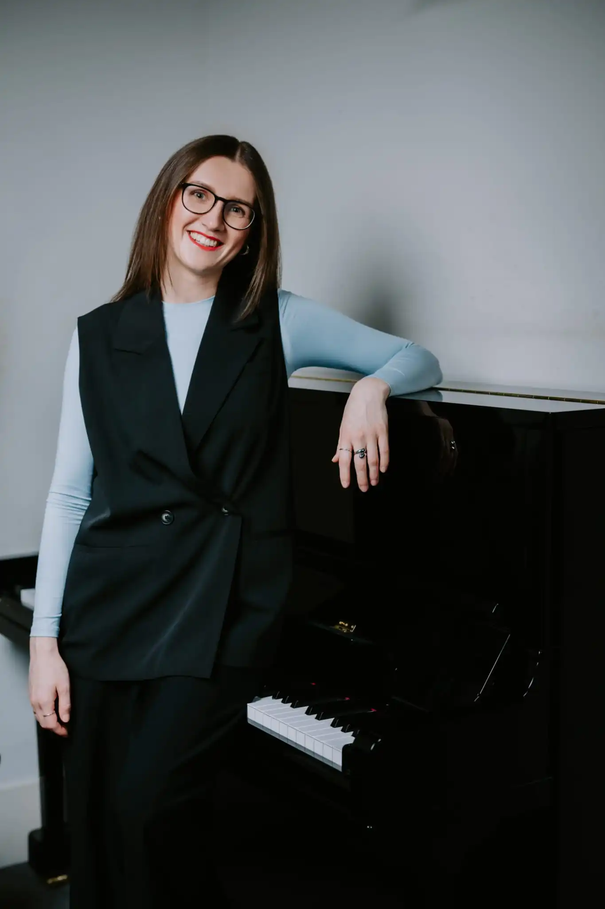

Hello, I'm Aneta, a piano teacher based in London.
With over 15 years of teaching and performing experience in both the UK and abroad, I have worked with children and adults of all levels, from complete beginners to advanced students, including families and students with additional needs. Each student I have taught has shaped me as a teacher, and I believe this breadth of experience allows me to adapt my teaching style to the individual needs of every learner.
Although I have always loved performing, what truly fulfils me is guiding students as they learn and grow—from their very first notes to mastering their favourite pieces. For me, piano lessons are not only about developing technique or working towards exams, but also about joy, creativity, self-expression, and building a lifelong connection with music.
My Musical Journey
I was born in the Czech Republic, where my musical journey began at a young age. I started by playing the recorder, singing as both a soloist and in choirs, and composing songs for my girls' music group. All of these experiences eventually led me to discover the piano—an instrument that has become a very special part of my life. My passion for music led me to study at the Prague Conservatoire, where I completed a six-year professional programme, followed by Music Pedagogy at Charles University. Alongside my studies, I performed in concerts and competitions while also beginning my teaching career. It was during this time that I realised sharing music with others was just as meaningful to me as performing.
Why I Love Teaching
Watching my students grow in confidence and develop a genuine love for music is what makes teaching so rewarding. Seeing them smile as they learn new skills, master pieces they once thought impossible, and take pride in their achievements is the greatest privilege of my work.